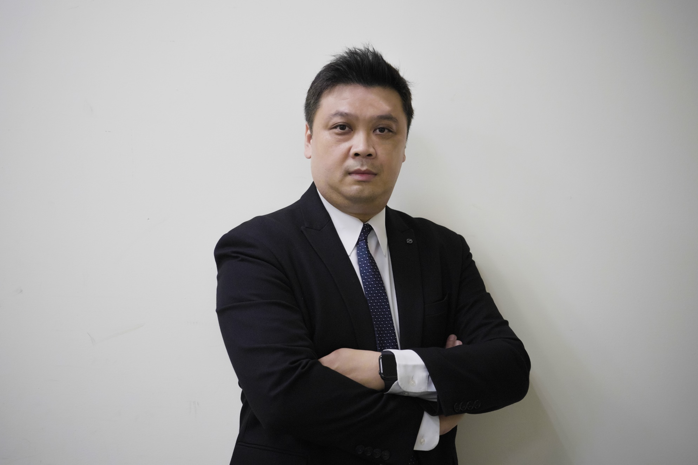

基礎建構
2015.05
建構模組化系統報表上線
整合數據分析庫，結合 Smart DMS 系統，導入模組化系統報表。
裕隆集團 · 裕信汽車股份有限公司
總經理｜通路經營 · 組織轉型 · 品牌培訓
「裕隆集團經銷體系內，歷練最完整的經理人。」
二十四年，從第一線銷售顧問到集團經營決策核心，親歷通路數位轉型、組織再造與新事業開發的每一個關鍵時刻。

CREDO
兵來將擋，水來土淹——不怕事；學海無涯，為勤是岸——好學習；審時度勢，見機行事——肯調整。
01 — PROFILE
1979 年生，國防管理學院會計系畢業，並取得國立政治大學 EMBA 經營管理碩士。2002 年以第一線銷售顧問的身份加入裕隆集團裕信汽車，從基層業務代表做起，歷經據點主管、部門經理、行銷系統協理，至今擔任總經理——在同一個經營體系中淬煉二十四年，這樣完整的歷練路徑，在裕隆集團的經銷體系中並不多見。
現亦兼任坤侑貿易股份有限公司董事。座右銘為「見賢思齊，見不賢而內自省」，秉持從基層出發、永遠保持活力與拚勁的信念，持續帶領組織前進。
02 — CAREER JOURNEY
從銷售第一線到集團決策核心，四個階段，二十四年不間斷的歷練。
2002 — 2007
擔任第一線銷售工作，負責客戶經營維繫；升任據點主管後，負責據點營運管理，以轄區市場經營深耕。
2007 — 2015
負責部門基礎管理，建構模組化營運系統（DMS），並導入連動電子營銷管理報表，將管理全面電子化。
2015 — 2021
負責部門營運與損益管理，整合跨部門資源推動組織優化再造——成立中古車事業部、租賃長租事業部等新事業中心。
2021 — NOW
主導經營決策、跨步整合以及營運績效提升；因應市場轉變，整合公司內外部資源，全面推動企業數位轉型。
跨域學習 · 敏捷思維
2015 – 2023，從基礎建構、創造獲利到全面推動轉型，逐步將傳統經銷通路帶入數位時代。
基礎建構
2015.05
整合數據分析庫，結合 Smart DMS 系統，導入模組化系統報表。
基礎建構
2018.03
進階數據庫線上管理，整合業務、服務系統即時產出管理資訊。
基礎建構
2019.02
首創全國經銷公司訓練講師團，透過內部機制篩選講師、建立人才庫。
基礎建構
2019.04
因應產業轉型，超前部署數位轉型驅動，成立數位發展部推動數位變革。
創造獲利
2020.02
打造多元購車平台，透過長租業務拓展企業接觸商機。
創造獲利
2020.07
推動經銷公司中古車平台，透過認證與查定機制，建構完整汽車銷售生態系。
創造獲利
2021.01
建立 LINE 官方帳號，設立綁定機制識別車主，提供客製化服務。
推動轉型
2022.03
與集團水平事業合作，透過數位合作，為會員建構人、車、生活價值鏈。
推動轉型
2022.10
建構無痛貼標系統，後台紀錄會員偏好並調整廣告策略，精準鎖定潛在客戶。
推動轉型
2023.01
推行第一線人員使用數位銷售工具，灌輸數位觀念，翻轉傳統汽車銷售模式。
推動轉型
2023.05
將人事系統整合線上化，大量減少行政作業時間，從日常開始打造數位化環境。
03 — TURNAROUND
進入經營體系後，用三年時間改善公司體質，成功止損轉虧為盈——並在其後持續維持獲利水準。
2019
因應產業變動，數位發展部成立並推動數位變革，減少傳統廣告龐大支出。
2020
推動新事業發展——成立長租事業與中古車事業部，為公司創造額外獲利來源。
2023
推動全員數位化，翻轉傳統銷售模式，並持續以精準行銷減少成本支出。
04 — HONORS
屢創佳績，再創高峰——二十餘年職涯中持續獲品牌與集團表彰。
年度風雲銷售獎
CEFIRO 車型全國銷售話術競賽
品牌指定教育訓練專用講師
台北國際車展銷售紀錄保持人
裕隆日產超級盃銷售競賽
裕隆日產龍虎風雲競賽
裕隆日產零服系統挑戰顛峰獎
跨企業演講
2020 年獲邀至中華汽車演講，主題：汽車經銷公司數位轉型。
校園職涯分享
2022 年獲邀至新北市忠孝國中、宜蘭慧燈中學，主題：職場達人經驗分享。
推動產學合作
2022 年結合教育部推動產學合作，代表品牌捐贈電動車予新北高工。
媒體專訪紀錄
車展銷售王專訪、媒體汽車銷售專欄節目專訪。
社會回饋
受邀至校園進行職涯分享演講、發動公益捐血活動、代表裕隆日產贈送電動車。
勤奮好學 · 努力不懈
兵來將擋
水來土淹
不怕事
接獲任務最害怕的就是怕事、怕困難——很多事情還沒做就自己嚇自己。我的觀念是「做就對了」，所以不怕事，不怕挑戰。
學海無涯
為勤是岸
好學習
人要往前走，一定要學習新的事務。我持續學習新的管理模式，每週帶領員工進行讀書會，透過學習開創新格局、強化經營視野。
審時度勢
見機行事
肯調整
遇到問題要懂得隨時調整才會繼續進步。身為管理幹部，必須隨時掌握市場脈動、隨時應對，才能帶領團隊走向對的方向。
FOR ORGANIZATIONS
二十四年通路經營的第一線經驗，轉化為可複製、可落地的組織能力。
從表報電子化、精準行銷貼標到全員數位化，完整主導經銷通路的三階段數位轉型。
整合業務、服務、零件、行銷等多部門資源，推動組織優化再造，成立新事業中心。
主導中古車、長租等新事業體開發，三年內帶領公司由虧轉盈並持續穩定獲利。
十餘年品牌指定講師資歷，首創全國經銷體系種子講師團，培養具市場魅力的第一線團隊。
橫跨金融、保險、移動出行、紡織、建築、購物商場等集團事業，透過人脈網絡推升跨域合作。
05 — VISION
短期目標
過去經歷以業務行銷為主，對財務、產業與策略發展仍待系統化學習。期待以精實且多面向的管理課程結合個案研討，與跨領域夥伴交流，激盪不同視野，帶領公司持續突破、化解困境、穩健成長。
長期目標
汽車不該只是移動工具——在「移動過程」與「移動目的」上，都能被賦予更多功能與價值。未來將致力於便捷行車、智慧交通與優質生活的客戶服務系統開發，並持續向上進修，逐步將經營經驗轉化為企業管理顧問的能量，透過產學結合協助更多企業成功成長。
LET'S TALK
無論是通路數位轉型、組織再造，或是新事業開發的策略諮詢，歡迎與我聯繫。